🍲 Ингредиент
 Горячее молоко16 сытости
Горячее молоко16 сытости
Горячее молоко
ОбычныйСтало ещё вкуснее в подогретом виде. Съешь, чтобы утолить голод.
Из игры
Стало ещё вкуснее в подогретом виде. На удивление хорошо насыщает.
 Запечённый Иктирдир70 сытости
Запечённый Иктирдир70 сытости
Запечённый Иктирдир
ОбычныйТщательно запечённое мясо оленя, наполненное ароматом густого леса. Съешь, чтобы утолить голод.
Из игры
Тщательно запечённое мясо оленя, наполненное ароматом густого леса. Изысканный вкус этого блюда приносит уют и особую атмосферу в повседневную жизнь.
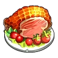
Запечённый Каприти с травами80 сытости
Запечённый Каприти с травами
ОбычныйДеликатно обжаренное мясо с природным ароматом трав и ягод. Съешь, чтобы утолить голод.
🔨 Крафт
Где сделать
📍 Где взять
Из игры
Деликатно обжаренное мясо с природным ароматом трав и ягод. В походных условиях дарит тепло и чувство полного удовлетворения.
 Запечённый Рашоа60 сытости
Запечённый Рашоа60 сытости
Запечённый Рашоа
ОбычныйКусок сочного мяса кабана, зажаренный на открытом огне. Съешь, чтобы утолить голод.
Из игры
Кусок сочного мяса кабана, зажаренный на открытом огне. Снаружи — хрустящая корочка, внутри — нежная, тающая текстура. Идеально подойдёт для праздничного стола.
 Запечённый Рейндрикс252 сытости
Запечённый Рейндрикс252 сытости
Запечённый Рейндрикс
ОбычныйБлюдо из ингредиентов: «Мясо Рейндрикса». Съешь, чтобы утолить голод.
🔨 Крафт
Где сделать
Из игры
Мясо ледяного оленя обладает уникальным свойством — после извлечения из огня оно мгновенно остывает, сохраняя свежесть. Превосходный вариант для длительного хранения и экстренных ситуаций.
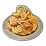
Карбонара129 сытости · 10 мин
Карбонара
ОбычныйБлюдо из пасты с ингредиентами «Яйцо» и «Молоко». 10 мин после еды: защита +20 %.
Из игры
Блюдо из пасты с ингредиентами «Яйцо» и «Молоко». После употребления на некоторое время увеличивает Защита +20%.
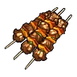
Кебаб из Ламболла52 сытости
Кебаб из Ламболла
ОбычныйБлюдо из баранины, запечённой в пряном маринаде. Съешь, чтобы утолить голод.
Из игры
Блюдо из баранины, запечённой в пряном маринаде. Обладает насыщенным и ярко выраженным характером вкуса.
Омлет67 сытости · 10 мин
Омлет
ОбычныйБлюдо из ингредиентов: «Помидор» и «Яйцо». 10 мин после еды: атака +10 %.
📍 Где взять
Из игры
Жареное Яйцо, сдобренное кетчупом. После употребления на некоторое время увеличивает Атака +10%.
 Пицца184 сытости · 10 мин
Пицца184 сытости · 10 мин
Пицца
ОбычныйБлюдо из ингредиентов: «Мука», «Красная ягода», «Помидор» и ещё 1. 10 мин после еды: скорость работы +30 %, голод растёт на 25 % медленнее.
🔨 Крафт
Где сделать
📍 Где взять
Из игры
Основа этого блюда — Хлеб с начинкой из ингредиентов «Красная ягода» и «Помидор» и сыра. После употребления на некоторое время немного повышается скорость работы и замедляется снижение сытости.
 Стейк из Моззарины80 сытости
Стейк из Моззарины80 сытости
Стейк из Моззарины
ОбычныйХорошо прожаренный плотный стейк. Съешь, чтобы утолить голод.
Из игры
Хорошо прожаренный плотный стейк. Насыщенный вкус наполняет энергией.
 Шашлычки из Чикипи50 сытости
Шашлычки из Чикипи50 сытости
Шашлычки из Чикипи
ОбычныйКуриные шашлычки, медленно приготовленные на углях. Съешь, чтобы утолить голод.
🔨 Крафт
Где сделать
Из игры
Куриные шашлычки, медленно приготовленные на углях. Легкая текстура и нежный, освежающий вкус.
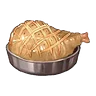
Эрмург на гриле50 сытости
Эрмург на гриле
ОбычныйБлюдо из жареной птицы, наполненное мощью и энергией покорителя небес. Съешь, чтобы утолить голод.
📍 Где взять
Из игры
Блюдо из жареной птицы, наполненное мощью и энергией покорителя небес.
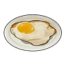
Яичница23 сытости
Яичница
ОбычныйЯйцо становится вкуснее в жареном виде. Съешь, чтобы утолить голод.
Из игры
Яйцо становится вкуснее в жареном виде. На удивление хорошо насыщает.
Дзингискан из Ламболла147 сытости · 10 мин
Дзингискан из Ламболла
НеобычныйТщательно обжаренная на углях маринованная баранина. 10 мин после еды: рассудок падает на 20 % медленнее, скорость работы +30 %.
🔨 Крафт
Где сделать
📍 Где взять
Из игры
Тщательно обжаренная на углях маринованная баранина. На некоторое время после еды немного увеличивается скорость работы, а снижение рассудка замедляется.
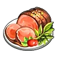
Запечённый Ламболл с травами94 сытости · 10 мин
Запечённый Ламболл с травами
НеобычныйСвежие ягоды подчёркивают характерный вкус баранины, придавая блюду аппетитный аромат. 10 мин после еды: защита +10 %.
🔨 Крафт
Где сделать
📍 Где взять
Из игры
Свежие ягоды подчёркивают характерный вкус баранины, придавая блюду аппетитный аромат. На некоторое время после еды Защита +10%
 Запечённый на кости Брончерри252 сытости
Запечённый на кости Брончерри252 сытости
Запечённый на кости Брончерри
НеобычныйОтборный кусок жареного мяса, в котором чувствуется вкус дикого властелина. Съешь, чтобы утолить голод.
🔨 Крафт
Где сделать
Из игры
Отборный кусок жареного мяса, в котором чувствуется вкус дикого властелина. Из костей сочится насыщенный мясной сок, а само мясо — упругое снаружи, но удивительно нежное внутри.
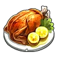
Соте из мяса Чикипи92 сытости · 10 мин
Соте из мяса Чикипи
НеобычныйБлюдо из тушеных в сливочном масле толстых кусков курицы. 10 мин после еды: скорость работы +30 %.
📍 Где взять
Из игры
Блюдо из тушеных в сливочном масле толстых кусков курицы. Во вкусе чувствуются освежающие нотки лимона. На некоторое время после еды скорость работы немного повышается.
 Стейк из Маммореста252 сытости
Стейк из Маммореста252 сытости
Стейк из Маммореста
НеобычныйБлагородный, насыщенный вкус. Съешь, чтобы утолить голод.
📍 Где взять
Из игры
Благородный, насыщенный вкус. Каждый укус возвращает к воспоминаниям о дремучих лесах и ледяных просторах.
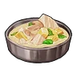
Тушёный Рейндрикс132 сытости · 10 мин
Тушёный Рейндрикс
НеобычныйРагу из мягкого мяса оленя, выращенного в прохладных краях, тушёное с овощами. 10 мин после еды: голод растёт на 25 % медленнее.
📍 Где взять
Из игры
Рагу из мягкого мяса оленя, выращенного в прохладных краях, тушёное с овощами. Нежная текстура сочетается с тонкой естественной сладостью. После употребления на некоторое время медленнее снижается уровень сытости.
 Тушёный Эрмург92 сытости · 10 мин
Тушёный Эрмург92 сытости · 10 мин
Тушёный Эрмург
НеобычныйМедленно тушёное блюдо с насыщенным вкусом умами и ярким ароматом дикого мяса. 10 мин после еды: рассудок падает на 20 % медленнее.
🔨 Крафт
Где сделать
Из игры
Медленно тушёное блюдо с насыщенным вкусом умами и ярким ароматом дикого мяса. На некоторое время после еды снижение рассудка замедляется.
 Цзяоцзы с мясом Рашоа115 сытости · 10 мин
Цзяоцзы с мясом Рашоа115 сытости · 10 мин
Цзяоцзы с мясом Рашоа
НеобычныйСваренное блюдо из грибов и мясного фарша, завернутого в пшеничное тесто. 10 мин после еды: голод растёт на 25 % медленнее, атака +10 %.
Из игры
Сваренное блюдо из грибов и мясного фарша, завернутого в пшеничное тесто. Обладает приятной мягкой и эластичной текстурой. Дает ощущение сытости на некоторое время и увеличивает Атака +10%.
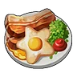
Яйца с беконом из Рашоа167 сытости · 10 мин
Яйца с беконом из Рашоа
НеобычныйКопчёный аромат бекона и нежная текстура яйца создают изысканную вкусовую гармонию. 10 мин после еды: атака +10 %.
📍 Где взять
Из игры
Копчёный аромат бекона и нежная текстура яйца создают изысканную вкусовую гармонию. На некоторое время после еды Атака +10%
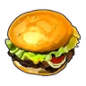
Гамбургер с Моззариной162 сытости · 10 мин
Гамбургер с Моззариной
РедкийИдеальное сочетание вкуса сочной говядины и сладости булочек. 10 мин после еды: скорость работы +50 %, рассудок падает на 25 % медленнее.
Из игры
Идеальное сочетание вкуса сочной говядины и сладости булочек. На некоторое время после еды немного увеличивается скорость работы, а снижение рассудка замедляется.
 Караагэ из Чикипи108 сытости · 10 мин
Караагэ из Чикипи108 сытости · 10 мин
Караагэ из Чикипи
РедкийНевероятно сочное блюдо из курицы. 10 мин после еды: скорость работы +30 %, рассудок падает на 25 % медленнее.
🔨 Крафт
Где сделать
📍 Где взять
Из игры
Невероятно сочное блюдо из курицы. На некоторое время после еды скорость работы немного повышается, снижение рассудка замедляется.
Локо-моко из Иктирдира174 сытости · 10 мин
Локо-моко из Иктирдира
РедкийСочная котлета и глазунья с нежным, тягучим желтком. 10 мин после еды: атака +20 %.
🔨 Крафт
Где сделать
📍 Где взять
Из игры
Сочная котлета и глазунья с нежным, тягучим желтком. Этот совершенный дуэт дарит во рту настоящее счастье. На некоторое время после еды Атака +20%.
Спринг-роллы115 сытости · 10 мин
Спринг-роллы
РедкийОбжаренные роллы с начинкой из овощей и грибов. 10 мин после еды: рассудок падает на 50 % медленнее, атака +10 %.
Из игры
Обжаренные роллы с начинкой из овощей и грибов. Приятно хрустят при укусе. На некоторое время замедляют снижение рассудка и увеличивают Атака +10%.
 Тушёный Иктирдир212 сытости · 10 мин
Тушёный Иктирдир212 сытости · 10 мин
Тушёный Иктирдир
РедкийРассыпчатое, мягчайшее мясо оленя, приготовленное с любовью. 10 мин после еды: защита +20 %.
📍 Где взять
Из игры
Рассыпчатое, мягчайшее мясо оленя, приготовленное с любовью. Нежное переплетение вкусов мяса и овощей рождает мягкость и гармонию. На некоторое время после еды Защита +20%.
Хот-дог из Рашоа140 сытости · 10 мин
Хот-дог из Рашоа
РедкийБлюдо с сочной сосиской, зажатой между двумя булочками. 10 мин после еды: защита +20 %.
Из игры
Блюдо с сочной сосиской, зажатой между двумя булочками. Хрустящая золотистая корочка и пряный вкус создают идеальное сочетание. На некоторое время после еды Защита +20%.
 Чизбургер с Моззариной288 сытости · 10 мин
Чизбургер с Моззариной288 сытости · 10 мин
Чизбургер с Моззариной
РедкийДобавление сыра вознесло блюдо в божественную сферу вкуса. 10 мин после еды: атака +20 %, голод растёт на 50 % медленнее.
🔨 Крафт
Где сделать
📍 Где взять
Из игры
Добавление сыра вознесло блюдо в божественную сферу вкуса. На некоторое время после еды Атака +20%, и медленнее снижается уровень сытости.
Якисоба с мясом Брончерри321 сытости · 10 мин
Якисоба с мясом Брончерри
РедкийЛапша, обжаренная с овощами и мясом. 10 мин после еды: атака +20 %.
🔨 Крафт
Где сделать
Из игры
Лапша, обжаренная с овощами и мясом. Насыщенный соус отлично подчёркивает вкус сочных мясных кусочков. После употребления на некоторое время увеличивает Атака +20%.
Карри с мясом Маммореста418 сытости · 10 мин
Карри с мясом Маммореста
ЭпическийОвощи и мясо, тушённые со специями. 10 мин после еды: атака +25 %.
🔨 Крафт
Где сделать
📍 Где взять
Из игры
Овощи и мясо, тушённые со специями. Блюдо с крупными кусками мяса и насыщенным вкусом. На некоторое время после употребления увеличивает Атака +25%.
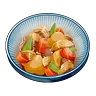
Никудзяга из Эрмурга150 сытости · 10 мин
Никудзяга из Эрмурга
ЭпическийБлюдо из мяса и картофеля, тушёных в сладко-солёном соусе. 10 мин после еды: защита +25 %.
📍 Где взять
Из игры
Блюдо из мяса и картофеля, тушёных в сладко-солёном соусе. Необычайно тёплый и ностальгический вкус. На некоторое время после употребления увеличивает Защита +25%.
 Грибной суп52 сытости · 10 мин
Грибной суп52 сытости · 10 мин
Грибной суп
ОбычныйКрем-суп с ингредиентом «Гриб». 10 мин после еды: голод растёт на 25 % медленнее.
📍 Где взять
Из игры
Крем-суп с ингредиентом «Гриб». После употребления на некоторое время дольше сохраняется чувство сытости.
 Жареные ягоды21 сытости
Жареные ягоды21 сытости
Жареные ягоды
ОбычныйБлагодаря обжарке повысилась питательная ценность. Съешь, чтобы утолить голод.
Из игры
Благодаря обжарке повысилась питательная ценность. На удивление хорошо насыщает.
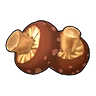
Жареный гриб18 сытости
Жареный гриб
ОбычныйГриб, ставший более питательным после обжарки. Съешь, чтобы утолить голод.
Из игры
Гриб, ставший более питательным после обжарки. На удивление хорошо насыщает.
 Маринованные грибы60 сытости · 10 мин
Маринованные грибы60 сытости · 10 мин
Маринованные грибы
ОбычныйБлюдо из ингредиентов: «Гриб» и «Красная ягода». 10 мин после еды: защита +10 %.
📍 Где взять
Из игры
Маринованные в маринаде Гриб. После употребления на некоторое время увеличивает Защита +10%.
 Панкейки42 сытости · 10 мин
Панкейки42 сытости · 10 мин
Панкейки
ОбычныйБлюдо, приготовленное из ингредиентов «Мука» и «Молоко». 10 мин после еды: рассудок падает на 25 % медленнее.
Из игры
Блюдо, приготовленное из ингредиентов «Мука» и «Молоко». На некоторое время после еды снижение рассудка немного замедляется.
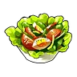
Салат84 сытости · 10 мин
Салат
ОбычныйБлюдо из ингредиентов: «Латук» и «Помидор». 10 мин после еды: скорость работы +30 %.
Из игры
Салат, в состав которого входят Латук и Помидор. На некоторое время после еды скорость работы немного повышается.
 Торт656 сытости
Торт656 сытости
Торт
ОбычныйТорт для разведения палов. Положи его в сундук на Пастбище свиданий, и палы отложат яйца.
🔨 Крафт
Где сделать
📍 Где взять
Из игры
Блюдо, которое едят по случаю праздников. Если положить его в сундук Пастбище свиданий, Палы, съевшие его и набравшиеся сил, начнут откладывать яйца.
 Хлеб27 сытости
Хлеб27 сытости
Хлеб
ОбычныйХлеб приготовлен из ингредиента «Мука». Съешь, чтобы утолить голод.
📍 Где взять
Из игры
Хлеб приготовлен из ингредиента «Мука». Достаточно вкусный, чтобы стать основой рациона.
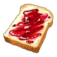
Хлеб с вареньем51 сытости
Хлеб с вареньем
ОбычныйСладость ягод отлично дополняет вкус хлеба. Съешь, чтобы утолить голод.
📍 Где взять
Из игры
Хлеб с вареньем. Сладость ягод отлично дополняет вкус хлеба.
 Грибной торт676 сытости
Грибной торт676 сытости
Грибной торт
НеобычныйТорт для разведения палов. Положи его в сундук на Пастбище свиданий, и палы отложат яйца.
🔨 Крафт
Где сделать
Из игры
Если поместить в сундук Пастбище свиданий, съевшие его Палы наберутся сил и отложат яйца. У потомства немного повышается шанс развития талантов.
 Жареные овощи54 сытости · 10 мин
Жареные овощи54 сытости · 10 мин
Жареные овощи
НеобычныйБлюдо из ингредиентов «Морковь» и «Лук», обжаренных в масле. 10 мин после еды: скорость работы +10 %, защита +10 %.
Из игры
Блюдо из ингредиентов «Морковь» и «Лук», обжаренных в масле. Простое и вкусное овощное блюдо. Ненадолго немного повышает скорость работы и увеличивает Защита +10%.
 Картофель фри35 сытости · 10 мин
Картофель фри35 сытости · 10 мин
Картофель фри
НеобычныйКартофель, обжаренный в масле. 10 мин после еды: рассудок падает на 25 % медленнее.
🔨 Крафт
Где сделать
Из игры
Картофель, обжаренный в масле. Стоит попробовать — и остановиться невозможно. Немного замедляет снижение рассудка на некоторое время.
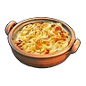
Гратен113 сытости · 10 мин
Гратен
РедкийКартофель в соусе, запечённый до румяной корочки. 10 мин после еды: голод растёт на 50 % медленнее, защита +10 %.
Из игры
Картофель в соусе, запечённый до румяной корочки. Особенно вкусен в горячем виде. Даёт ощущение сытости на некоторое время и увеличивает Защита +10%.
 Минестроне146 сытости · 10 мин
Минестроне146 сытости · 10 мин
Минестроне
РедкийСуп с большим количеством овощей. 10 мин после еды: скорость работы +40 %.
Из игры
Суп с большим количеством овощей. Согревает изнутри. На некоторое время увеличивает скорость работы.
Овощной торт696 сытости
Овощной торт
РедкийТорт для разведения палов. Положи его в сундук на Пастбище свиданий, и палы отложат яйца.
Из игры
Если поместить в сундук Пастбище свиданий, съевшие его Палы наберутся сил и отложат яйца. За один раз откладывает два яйца.
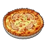
Киш с грибами184 сытости · 10 мин
Киш с грибами
ЭпическийПирог с начинкой из яиц, овощей, грибов и сливок. 10 мин после еды: голод растёт на 50 % медленнее, рассудок падает на 50 % медленнее.
Из игры
Пирог с начинкой из яиц, овощей, грибов и сливок. Остаётся вкусным даже в холодном виде. Даёт ощущение сытости на некоторое время и замедляет снижение рассудка.
 Роскошный овощной торт717 сытости
Роскошный овощной торт717 сытости
Роскошный овощной торт
ЭпическийТорт для разведения палов. Положи его в сундук на Пастбище свиданий, и палы отложат яйца.
📍 Где взять
Из игры
Если поместить в сундук Пастбище свиданий, съевшие его Палы наберутся сил и отложат яйца. Повышает вероятность мутаций и облегчает развитие талантов.
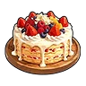
Специальный торт738 сытости
Специальный торт
ЛегендарныйТорт для разведения палов. Положи его в сундук на Пастбище свиданий, и палы отложат яйца.
📍 Где взять
Из игры
Если поместить в сундук Пастбище свиданий, съевшие его Палы наберутся сил и отложат яйца. Потомство с большей вероятностью унаследует больше пассивных навыков родителей.
 Кабаяки из Думада70 сытости
Кабаяки из Думада70 сытости
Кабаяки из Думада
ОбычныйОбжаренная в секретном соусе рыба, настолько вкусная, что исцеляет и тело, и душу. Съешь, чтобы утолить голод.
🔨 Крафт
Где сделать
Из игры
Обжаренная в секретном соусе рыба, настолько вкусная, что исцеляет и тело, и душу. Идеальное блюдо для уставшего укротителя Палов.
 Келпси на углях50 сытости
Келпси на углях50 сытости
Келпси на углях
ОбычныйСвежая рыба, запечённая на углях, обладает нежной и воздушной текстурой. Съешь, чтобы утолить голод.
Из игры
Свежая рыба, запечённая на углях, обладает нежной и воздушной текстурой.
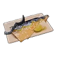
Жареный Скатласс с солью90 сытости · 10 мин
Жареный Скатласс с солью
НеобычныйБлюдо из свежего филе Скатласса, щедро посыпанного солью и запечённого на огне. 10 мин после еды: тебя не отбрасывает ударами.
🔨 Крафт
Где сделать
Из игры
Блюдо из свежего филе Скатласса, щедро посыпанного солью и запечённого на огне. На некоторое время делает невосприимчивым к отбрасыванию и оглушающему откату.
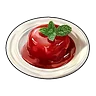
Качающееся желе Джелроя60 сытости · 10 мин
Качающееся желе Джелроя
НеобычныйБлюдо из ингредиентов: «Зонтик медузы Джелроя» и «Красная ягода». 10 мин после еды: опыт +10 %, защита +10 %.
🔨 Крафт
Где сделать
📍 Где взять
Из игры
Причудливый десерт, для приготовления которого используется Зонтик медузы Джелроя и Красная ягода. На некоторое время немного увеличивает количество получаемого опыта. Защита +10%
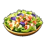
Салат из морепродуктов95 сытости · 30 мин
Салат из морепродуктов
НеобычныйБлюдо из ингредиентов: «Щупальце Глуппи» и «Латук». 30 мин после еды: опыт +20 %.
📍 Где взять
Из игры
Полезный салат, для приготовления которого используются Щупальце Глуппи и Латук. На некоторое время увеличивает количество получаемого опыта.
 Стейк из Манчилла85 сытости
Стейк из Манчилла85 сытости
Стейк из Манчилла
НеобычныйХорошо прожаренный на углях стейк. Съешь, чтобы утолить голод.
🔨 Крафт
Где сделать
Из игры
Хорошо прожаренный на углях стейк. Снаружи он ароматно поджарен, а внутри — сочный и тающий во рту. Особые ингредиенты сохраняют его насыщенный вкус и обеспечивают отличную сохранность.
 Студенистое желе Джелиэтты58 сытости · 10 мин
Студенистое желе Джелиэтты58 сытости · 10 мин
Студенистое желе Джелиэтты
НеобычныйБлюдо из ингредиентов: «Зонтик медузы Джелиэтты» и «Жидкость водного Пала». 10 мин после еды: опыт +10 %, атака +10 %.
🔨 Крафт
Где сделать
📍 Где взять
Из игры
Причудливый десерт, для приготовления которого используется Зонтик медузы Джелиэтты и Жидкость водного Пала. На некоторое время немного увеличивает количество получаемого опыта. Атака +10%
 Такояки из Глуппи80 сытости · 30 мин
Такояки из Глуппи80 сытости · 30 мин
Такояки из Глуппи
НеобычныйБлюдо из ингредиентов: «Щупальце Глуппи» и «Мука». 30 мин после еды: опыт +10 %.
Из игры
Блюдо из теста на основе ингредиента «Мука» с начинкой из ингредиента «Щупальце Глуппи», запечённое до румяной корочки. На некоторое время немного увеличивает количество получаемого опыта.
 Келпси-фрай108 сытости · 10 мин
Келпси-фрай108 сытости · 10 мин
Келпси-фрай
РедкийУпругое рыбное филе в хрустящей корочке. 10 мин после еды: защита +10 %, рассудок падает на 50 % медленнее.
🔨 Крафт
Где сделать
Из игры
Упругое рыбное филе в хрустящей корочке. На некоторое время после еды Защита +10%, снижение рассудка замедляется.
 Паста с морепродуктами193 сытости · 10 мин
Паста с морепродуктами193 сытости · 10 мин
Паста с морепродуктами
РедкийБлюдо из ингредиентов: «Щупальце Глуппи», «Мука» и «Помидор». 10 мин после еды: защита от взрывов +100 %.
📍 Где взять
Из игры
Паста с щупальцами Глуппи и ароматом моря. На некоторое время защищает от взрывного урона.
 Чаудер из Думада170 сытости · 10 мин
Чаудер из Думада170 сытости · 10 мин
Чаудер из Думада
РедкийУникальный вкус, утопающий в кремовом супе. 10 мин после еды: скорость работы +50 %, голод растёт на 25 % медленнее.
📍 Где взять
Из игры
Уникальный вкус, утопающий в кремовом супе. На некоторое время после еды скорость работы повышается, снижение уровня сытости немного замедляется.
Молоко12 сытости
Молоко
ОбычныйМожно пить как есть или использовать в готовке. Можно съесть сразу или приготовить из этого что-то вкуснее.
📍 Где взять
Где используется
Из игры
Можно пить как есть или использовать в готовке. Получается от пала «Моззарина».
 Мясо Иктирдира50 сытости
Мясо Иктирдира50 сытости
Мясо Иктирдира
ОбычныйЛёгкое и нежирное, но при этом очень вкусное мясо. Можно съесть сразу или приготовить из этого что-то вкуснее.
📍 Где взять
Где используется
Из игры
Мясо Иктирдир. Лёгкое и нежирное, но при этом очень вкусное мясо.
Мясо Каприти57 сытости
Мясо Каприти
ОбычныйПолезное, богатое питательными веществами мясо. Можно съесть сразу или приготовить из этого что-то вкуснее.
📍 Где взять
Где используется
Из игры
Мясо Каприти. Полезное, богатое питательными веществами мясо. Исходящий от него ягодный аромат пробуждает аппетит.
Мясо Ламболла37 сытости
Мясо Ламболла
ОбычныйКрасное мясо с выразительным, характерным вкусом. Можно съесть сразу или приготовить из этого что-то вкуснее.
📍 Где взять
Из игры
Мясо Ламболл. Красное мясо с выразительным, характерным вкусом. Имеет специфический привкус, но остаётся вкусным.
 Мясо Моззарины57 сытости
Мясо Моззарины57 сытости
Мясо Моззарины
ОбычныйМясистое и сочное мраморное мясо с ярким вкусом. Можно съесть сразу или приготовить из этого что-то вкуснее.
📍 Где взять
Где используется
Из игры
Мясо Моззарина. Мясистое и сочное мраморное мясо с ярким вкусом. Любимое лакомство жителей острова Палпагос.
 Мясо Рашоа43 сытости
Мясо Рашоа43 сытости
Мясо Рашоа
ОбычныйСочное, питательное и с ярко выраженным вкусом дичи. Можно съесть сразу или приготовить из этого что-то вкуснее.
📍 Где взять
Из игры
Мясо Рашоа. Сочное, питательное и с ярко выраженным вкусом дичи.
Мясо Рейндрикса64 сытости
Мясо Рейндрикса
ОбычныйУдивительное оленье мясо, всегда сохраняющее низкую температуру. Можно съесть сразу или приготовить из этого что-то вкуснее.
📍 Где взять
Где используется
Из игры
Мясо Рейндрикс. Удивительное оленье мясо, всегда сохраняющее низкую температуру. Хранится невероятно долго.
Мясо Чикипи36 сытости
Мясо Чикипи
ОбычныйОбладает лёгким вкусом и легко усваивается. Можно съесть сразу или приготовить из этого что-то вкуснее.
📍 Где взять
Где используется
Из игры
Мясо Чикипи. Обладает лёгким вкусом и легко усваивается. Жители острова Палпагос едят его с удовольствием.
 Мясо Эрмурга36 сытости
Мясо Эрмурга36 сытости
Мясо Эрмурга
ОбычныйПитательное и обладает насыщенным вкусом. Можно съесть сразу или приготовить из этого что-то вкуснее.
📍 Где взять
Где используется
Из игры
Мясо Эрмург. Питательное и обладает насыщенным вкусом.
Яйцо16 сытости
Яйцо
ОбычныйВкусно само по себе, также используется как ингредиент. Можно съесть сразу или приготовить из этого что-то вкуснее.
📍 Где взять
Где используется
Из игры
Вкусно само по себе, также используется как ингредиент. Откладывается Чикипи.
 Зонтик медузы Джелиэтты35 сытости
Зонтик медузы Джелиэтты35 сытости
Зонтик медузы Джелиэтты
НеобычныйУникальная хрустящая текстура, от которой невозможно отказаться — настоящий морской деликатес. Можно съесть сразу или приготовить из этого что-то вкуснее.
📍 Где взять
Где используется
Из игры
Зонтик Джелиэтта. Уникальная хрустящая текстура, от которой невозможно отказаться — настоящий морской деликатес.
 Зонтик медузы Джелроя37 сытости
Зонтик медузы Джелроя37 сытости
Зонтик медузы Джелроя
НеобычныйМожно съесть сразу или приготовить из этого что-то вкуснее.
📍 Где взять
Где используется
Из игры
Зонтик Джелрой. Уникальная плотная и упругая текстура, от которой невозможно отказаться — настоящий морской деликатес.
 Крокодилье мясо Манчиллы42 сытости
Крокодилье мясо Манчиллы42 сытости
Крокодилье мясо Манчиллы
НеобычныйПлотное, с приятной жёсткостью, с каждым укусом раскрывается глубокий и насыщенный вкус. Можно съесть сразу или приготовить из этого что-то вкуснее.
📍 Где взять
Где используется
Из игры
Мясо Манчилл. Плотное, с приятной жёсткостью, с каждым укусом раскрывается глубокий и насыщенный вкус.
Мясо Брончерри180 сытости
Мясо Брончерри
НеобычныйОгромный кусок мяса, таящий в себе мощную энергию. Можно съесть сразу или приготовить из этого что-то вкуснее.
📍 Где взять
Где используется
Из игры
Мясо Брончерри. Огромный кусок мяса, таящий в себе мощную энергию. Кладезь питательных веществ, накопленных с помощью фотосинтеза.
 Мясо Маммореста180 сытости
Мясо Маммореста180 сытости
Мясо Маммореста
НеобычныйХарактеризуется мощным и впечатляющим вкусом. Можно съесть сразу или приготовить из этого что-то вкуснее.
📍 Где взять
Где используется
Из игры
Мясо Мамморест. Характеризуется мощным и впечатляющим вкусом. Огромный объем насытит даже самого прожорливого едока.
Филе Скатласса80 сытости
Филе Скатласса
НеобычныйОтличается нежной и пышной текстурой мяса. Можно съесть сразу или приготовить из этого что-то вкуснее.
📍 Где взять
Где используется
Из игры
Филе Скатласс. Отличается нежной и пышной текстурой мяса. Поскольку имеет позвоночник, похожий на меч, при приготовлении требуется осторожность.
Щупальце Глуппи40 сытости
Щупальце Глуппи
НеобычныйОтличается упругой текстурой и легким утонченным вкусом. Можно съесть сразу или приготовить из этого что-то вкуснее.
📍 Где взять
Где используется
Из игры
Щупальце Глуппи. Отличается упругой текстурой и легким утонченным вкусом.
 Гриб13 сытости
Гриб13 сытости
Гриб
ОбычныйГриб, который можно есть сырым. Можно съесть сразу или приготовить из этого что-то вкуснее.
📍 Где взять
Где используется
Из игры
Гриб, который можно есть сырым. Если походить по острову, можно найти почти везде.
 Загадочный гриб1 сытости · 1 мин
Загадочный гриб1 сытости · 1 мин
Загадочный гриб
ОбычныйГриб, непригодный для употребления в сыром виде. 1 мин после еды: голод растёт на 25 % быстрее.
📍 Где взять
Из игры
Гриб, непригодный для употребления в сыром виде. После употребления вызывает быстрое чувство голода.
Картофель11 сытости
Картофель
ОбычныйСытная, неприхотливая к почве и урожайная культура. Можно съесть сразу или приготовить из этого что-то вкуснее.
📍 Где взять
Где используется
Из игры
Сытная, неприхотливая к почве и урожайная культура. Не подходит для употребления в сыром виде.
 Красная ягода15 сытости
Красная ягода15 сытости
Красная ягода
ОбычныйУниверсальный продукт, вкусный как в сыром, так и в жареном виде. Можно съесть сразу или приготовить из этого что-то вкуснее.
📍 Где взять
Где используется
Из игры
Универсальный продукт, вкусный как в сыром, так и в жареном виде. Растёт на всей территории острова.
Латук15 сытости
Латук
ОбычныйЭта зелень — настоящий король салатов. Можно съесть сразу или приготовить из этого что-то вкуснее.
📍 Где взять
Где используется
Из игры
Эта зелень — настоящий король салатов. Хрустящая текстура и освежающий вкус — настоящее совершенство.
 Лук9 сытости
Лук9 сытости
Лук
ОбычныйЛегко выращиваемая культура, любимая с давних времён. Можно съесть сразу или приготовить из этого что-то вкуснее.
📍 Где взять
Где используется
Из игры
Легко выращиваемая культура, любимая с давних времён. Не подходит для употребления в сыром виде.
 Морковь10 сытости
Морковь10 сытости
Морковь
ОбычныйЯркий и питательный корнеплод. Можно съесть сразу или приготовить из этого что-то вкуснее.
📍 Где взять
Где используется
Из игры
Яркий и питательный корнеплод. Не подходит для употребления в сыром виде.
 Мука3 сытости
Мука3 сытости
Мука
ОбычныйМука из ингредиента «Пшеница». Можно съесть сразу или приготовить из этого что-то вкуснее.
Где используется
Из игры
Мука из ингредиента «Пшеница». Применяется для приготовления Хлеб.
 Мёд10 сытости
Мёд10 сытости
Мёд
ОбычныйМёд, добываемый из пала «Бигард». Можно съесть сразу или приготовить из этого что-то вкуснее.
📍 Где взять
Где используется
Из игры
Мёд, добываемый из пала «Бигард». Сладкий и вкусный.
 Пещерный гриб15 сытости
Пещерный гриб15 сытости
Пещерный гриб
ОбычныйГрибы, растущие в пещерах. Можно съесть сразу или приготовить из этого что-то вкуснее.
📍 Где взять
Где используется
Из игры
Грибы, растущие в пещерах. Ингредиент для целебных снадобий.
 Помидор15 сытости
Помидор15 сытости
Помидор
ОбычныйЯркий ингредиент, который придаёт блюдам насыщенный цвет. Можно съесть сразу или приготовить из этого что-то вкуснее.
📍 Где взять
Где используется
Из игры
Яркий ингредиент, который придаёт блюдам насыщенный цвет. Богат ликопином и полезен для организма.
Пшеница6 сытости
Пшеница
ОбычныйИнгредиент — основа для многих блюд. Можно съесть сразу или приготовить из этого что-то вкуснее.
📍 Где взять
Где используется
Из игры
Ингредиент — основа для многих блюд. Пшеница это основа основ сельского хозяйства.
 Сахарная вата5 сытости
Сахарная вата5 сытости
Сахарная вата
ОбычныйСахарная вата, добываемая из пала «Вулипоп». Можно съесть сразу или приготовить из этого что-то вкуснее.
📍 Где взять
Где используется
Из игры
Сахарная вата, добываемая из пала «Вулипоп». Нежная сладость, тающая во рту.
 Карамельная сахарная вата5 сытости
Карамельная сахарная вата5 сытости
Карамельная сахарная вата
НеобычныйСахарная вата со вкусом карамели, добываемая из пала «Вулипоп Терра». Можно съесть сразу или приготовить из этого что-то вкуснее.
📍 Где взять
Где используется
Из игры
Сахарная вата со вкусом карамели, добываемая из пала «Вулипоп Терра». Нежная сладость, тающая во рту.
Мясо Думада50 сытости
Мясо Думада
ОбычныйС жирной прослойкой, насыщенное вкусом и ароматом. Можно съесть сразу или приготовить из этого что-то вкуснее.
📍 Где взять
Где используется
Из игры
Мясо Думад. С жирной прослойкой, насыщенное вкусом и ароматом. Мягкая, пышная текстура придаёт ему особую привлекательность.
 Мясо Келпси36 сытости
Мясо Келпси36 сытости
Мясо Келпси
ОбычныйОтличается упругой текстурой и лёгкой сладостью. Можно съесть сразу или приготовить из этого что-то вкуснее.
📍 Где взять
Где используется
Из игры
Мясо Келпси. Отличается упругой текстурой и лёгкой сладостью. Рыбное мясо, поэтому быстро портится.